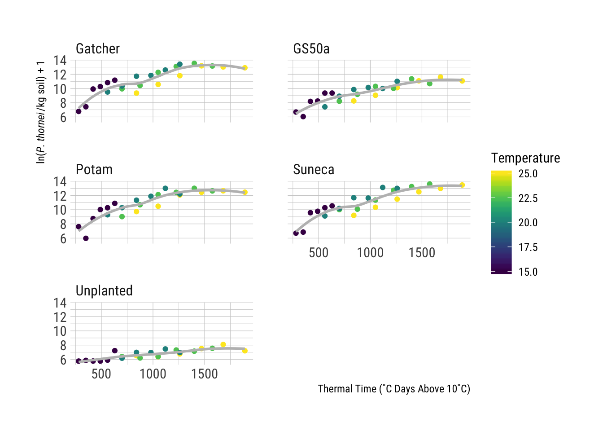

There are two types of models described in the paper, the first model is a linear model used to describe the unplanted control and two quadratic models fit Gatcher (Susceptible) and GS50a (Moderately Resistant) wheat cultivars. For a more detailed discussion on fitting plant disease models in R, please see the “Linear Regression” module in the “Ecology and Epidemiology in R” documents available in the American Phytopathological Society’s (APS) Education Center. For an even more in-depth discussion on linear models in R, how to fit and how to interpret the diagnostics that R provides the reader should refer to Faraway (2002).
This post will illustrate how to fit the original linear and quadratic models using the original data in R (R Core Team 2017).
Using the tidyverse, (2017) package simplifies the libraries used in this work. It is a collection of packages designed to work together for data science, https://www.tidyverse.org/. The tidyverse includes, readr (2017), used to import the data; tidyr (2018), used to format the data; dplyr (2017), used to subset the data; and ggplot2 (2016), used for visualising the data and model fits. viridis (2018) is a selection of colour pallets that are widely accessible for people with colour-blindness and printing in black and white.
The following code chunk checks first to see if you have tidyverse, viridis and hrbrthemes installed, if not, it will automatically install them and then load them. Then set the default theme for all graphs to theme_ipsum_rc.
if (!require(tidyverse)) {
install.packages(
"tidyverse",
repos = c(CRAN = "https://cloud.r-project.org/")
)
library(tidyverse)
}
if (!require(viridis)) {
install.packages(
"viridis",
repos = c(CRAN = "https://cloud.r-project.org/")
)
library(viridis)
}
if (!require(hrbrthemes)) {
install.packages(
"hrbrthemes",
repos = c(CRAN = "https://cloud.r-project.org/")
)
library(hrbrthemes)
}
ggplot2::theme_set(hrbrthemes::theme_ipsum_rc())The data are located in the data sub-folder. Import the data using read_csv() function from readr and view them.
nema <- read_csv("data/Nematode_Data.csv")
nemanrow(nema)## [1] 24There are nine columns in the nema data described here in the following table.
| Field | Data Description |
|---|---|
| Weeks | Number of weeks after wheat sowing |
| Days | Number of days after wheat sowing |
| Temperature | Temperature(˚C) treatment |
| Degree_Days | Average thermal time degree days above 10 ˚C for four soil depths (8, 15, 30 and 60 cm) |
| Unplanted |
Log*, log(), nematode population in the control treatment with no wheat planted
|
| Gatcher |
Log*, log(), nematode population in a susceptible wheat cultivar
|
| GS50a |
Log*, log(), nematode population in a moderately resistant wheat cultivar
|
| Potam |
Log*, log(), nematode population in a susceptible wheat cultivar
|
| Suneca |
Log*, log(), nematode population in a susceptible wheat cultivar
|
* For an exploration into the reasons why the data were transformed using the natural log log(), see the [Exploring Why the Data Were Log Transformed] in the [Bonus Material] section
|
You can see that each of the varieties have their own column in the original data format, this is commonly called wide data. Wide data are commonly found in spreadsheets but do not lend themselves easily to data analysis, modelling and visualisation. To make it easier to do these things it is common to convert the data from wide to long format, commonly referred to as tidying, when using R. The advantage of a tidy dataset is that it is easy to manipulate, model and visualize, and always has a specific structure where each variable is a column, each observation is a row, and each type of observational unit is a table (Wickham 2014).
In order to use ggplot2 for visualising the data, they need to be converted from wide to long. Using gather() from the tidyr package to convert from wide to long format where the varieties are all listed in a single column, Variety.
nema_long <- nema %>% gather(Variety, Log_pop, Unplanted:Suneca)
nema_longnrow(nema_long)## [1] 120As we see, the original nema data had only 24 rows and the long format of the data have 120 rows now.
Now that the data are in the format that ggplot2 uses, take a look at the data first to see what it looks like. Here we fit a smoothed line for each variety’s nematode population to the raw data. The individual temperature treatments are shown here by shape, the variety by colour.
ggplot(
nema_long,
aes(
x = Degree_days,
y = Log_pop,
colour = Temperature,
group = Variety
)
) +
geom_point() +
geom_smooth(
colour = "grey",
se = FALSE,
alpha = 0.5
) +
ylab(expression(
paste(
"ln(",
italic("P. thornei"),
"/kg soil) + 1"
),
sep = ""
)) +
xlab("Thermal Time (˚C Days Above 10˚C)") +
scale_colour_viridis("Temperature") +
facet_wrap(~ Variety, ncol = 2)
Faraway, Julian J. 2002. Practical Regression and Anova using R. [University of Bath]. https://cran.r-project.org/doc/contrib/Faraway-PRA.pdf.
Garnier, Simon. 2018. Viridis: Default Color Maps from ’Matplotlib’. https://CRAN.R-project.org/package=viridis.
R Core Team. 2017. R: A Language and Environment for Statistical Computing. Vienna, Austria: R Foundation for Statistical Computing. https://www.R-project.org/.
Wickham, Hadley. 2014. “Tidy Data.” The Journal of Statistical Software 59 (10). http://www.jstatsoft.org/v59/i10/.
———. 2016. ggplot2: Elegant Graphics for Data Analysis. Springer-Verlag New York. http://ggplot2.org.
———. 2017. tidyverse: Easily Install and Load the ’Tidyverse’. https://CRAN.R-project.org/package=tidyverse.
Wickham, Hadley, Romain Francois, Lionel Henry, and Kirill Müller. 2017. dplyr: A Grammar of Data Manipulation. https://CRAN.R-project.org/package=dplyr.
Wickham, Hadley, and Lionel Henry. 2018. tidyr: Easily Tidy Data with ’spread()’ and ’gather()’ Functions. https://CRAN.R-project.org/package=tidyr.
Wickham, Hadley, Jim Hester, and Romain Francois. 2017. readr: Read Rectangular Text Data. https://CRAN.R-project.org/package=readr.